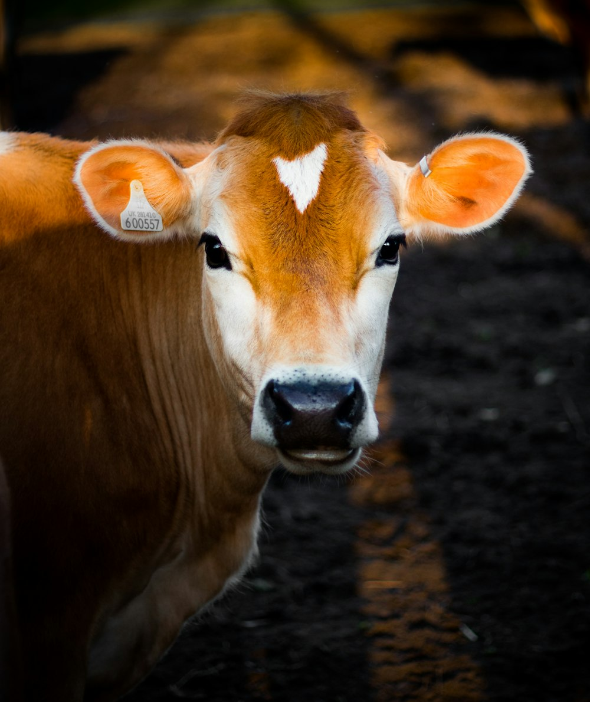

Adopt a Cow

Characteristics
- Gentle and friendly temperament
- Highly social animals
- Strong memory and emotional intelligence
- Enjoy routine and consistency
- Can form close bonds with humans and other animals
Care Guidelines
- Provide spacious outdoor areas with shelter
- Access to clean water and a balanced diet
- Regular vet checkups and vaccinations
- Groom occasionally to maintain coat health
- Maintain proper hoof care and hygiene
Grooming & Maintenance
- Brush to remove dirt and loose hair
- Clean around eyes and ears gently
- Inspect for ticks or parasites regularly
- Ensure comfortable bedding in shelter
- Trim hooves regularly to prevent issues
Fun Facts About Cows
- Cows have an excellent sense of smell and can detect odors up to 6 miles away!
- They have a unique way of chewing with a rotating jaw motion
- Cows form best friends and get stressed when separated
- They can recognize individual humans and remember faces
- The cow in the image has a rare heart-shaped marking on its forehead!